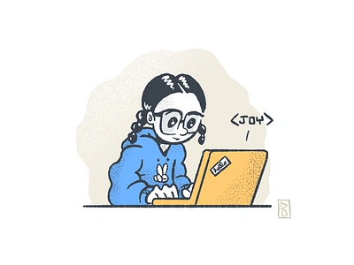
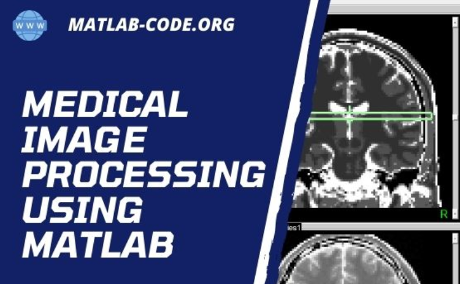

"Proficient in learning new systems quickly, managing multiple priorities efficiently, and contributing effectively both independently and within teams. Eager to leverage my skills and experience to drive my skills growth and success."
Aug 2019 - April 2020
"Developed a Machine Learning based system to detect fake and fabricated news, promoting media literacy and critical thinking. Designed and implemented a user friendly Command Prompt interface for users to input news for detection. ."

Aug 2018 - April 2019
"Designed and developed a user friendly interface for medical image processing, allowing users to easily upload, process, and analyze images."